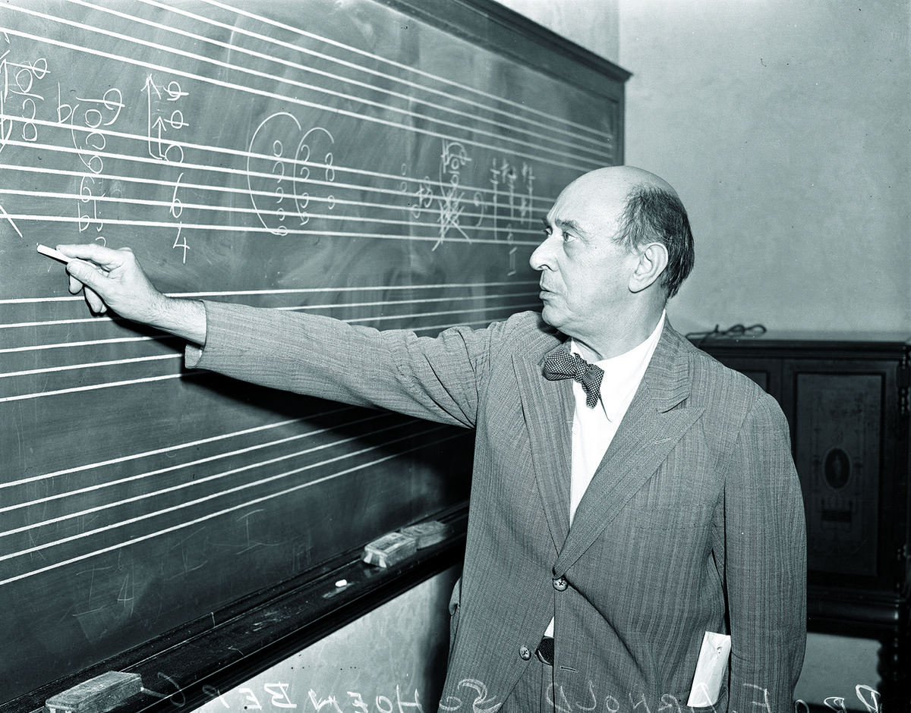

Atonal Harmonies - Henry Balducci
Atonal harmonies reject traditional tonal centers, creating music without a clear sense of key or hierarchy of pitches. Instead, they use dissonance and irregular intervals to evoke tension.
- Atonal Harmonies give composers a freedom from tradtional harmonic rules, they can experiment more with any notes from any scales.
- Many genius composers utilize the atonal harmony, making very complex pieces of music using notes and pitches from all around the different scales of music.
- This is the hardest harmony to make music with and make it sound good, not all notes from different scales will sound good. The composers who make this work have minds unlike any other.

(Arnold Schoenberg, pioneer of atonal composition)
Copyright - Henry Balducci 2024.